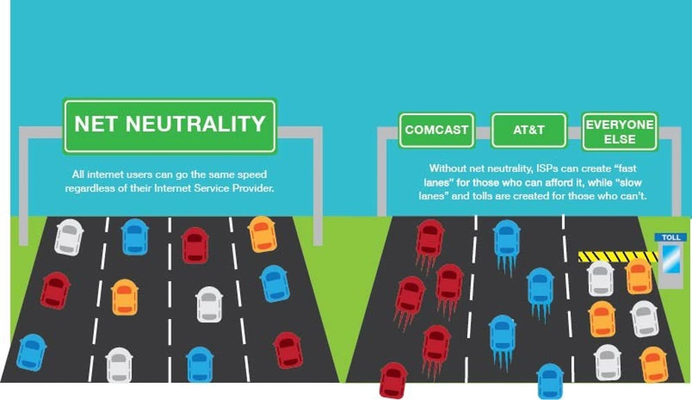

Out of the 2 pieces, I think this this piece was my favorite to read. I think Lee brings up an idea that is still relevant till this day
and will forever be relevant. We all know that our privacy has been and is still being threatened by our government and for somebody like Lee,
who crafted the World Wide Web as a place for our freedom to express ourselves and not be heavily regulated, it's saddening to see how far we've
come in this area.
"As long as the web’s basic principles are upheld, its ongoing evolution is not in the hands of any one person or organization—neither mine nor
anyone else’s. If we can preserve the principles, the Web promises some fantastic future capabilities."
I think the inclusion of the privacy violations that many companies such as Facebook are currently being investigated for was a great idea. I find
it to be a way of regression for our society, as the goal was always to advance in the field of technology, not bee held back. People rely on the Web
as a place where they can go and say or do what they want (obviously with moderation) and not be penalized for it; however, with all that companies are
doing now, it's hard to believe we're going to be able to get past this. Also associated to this, the fact that companies are making profit out of this idea,
such as creating ideas of personal chips for every individual to have, is not only the fear that Lee was concerned with but also a fear that alot of People
now have.